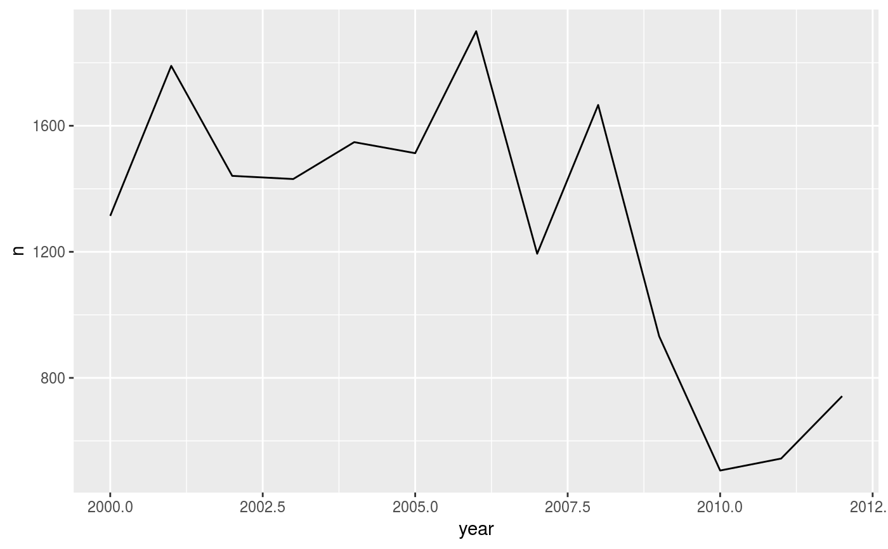

Computes percentiles.
Percentile(x)
| x | numeric vector |
|---|
A numeric vector of the same length as x with the percentile of each value of x.
Other utilities: Anomaly,
JumpBy, Mag,
logic
x <- rnorm(100) p <- Percentile(x) # Number of extreme temperature station-days library(data.table) claris <- copy(claris) claris[!is.na(max), percentile := Percentile(max), by = .(id, month(date))]#> id date max min percentile #> 1: 10415 2000-01-01 32.5 17.0 0.36559140 #> 2: 11022 2000-01-01 33.0 21.4 0.72759857 #> 3: 17970 2000-01-01 32.0 18.8 0.28855721 #> 4: 10415 2000-01-02 33.5 15.2 0.45161290 #> 5: 11022 2000-01-02 34.0 23.6 0.85663082 #> --- #> 179929: 11029 2009-01-27 34.1 21.8 0.77419355 #> 179930: 11029 2009-01-28 30.1 20.5 0.34838710 #> 179931: 11029 2009-01-29 25.5 20.1 0.03870968 #> 179932: 11029 2009-01-30 26.4 19.9 0.05806452 #> 179933: 11029 2009-01-31 31.6 18.3 0.49677419extreme.days <- claris[, .(n = sum(percentile > 0.90, na.rm = TRUE)), by = .(year(date))] library(ggplot2) ggplot(extreme.days, aes(year, n)) + geom_line()